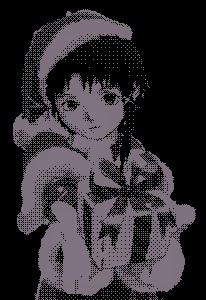

2021.html pt.1
-noise
3.12.20


Stand by...


Congratulation
Thank you to the people who solved the puzzle.It's a steady stream of curious people visiting my site. I'm happy to see so many people visiting and enjoying this site. I don't understand really what drives people back to this place. The aesthetics, the music, the strangeness, I don't know. My only guess is that I can communicate the the people of the web, evoking emotions for emotionless people, that the site taps into something in us as a "pioneering" group. All the pages on this site was made through my thoughts and emotions. It comforts me that other people out there can relate to my thoughts.
The site has not had many updates, that saddens me. I'm starting to realise after months of denial that I've lost the spark that Lain gave me. I get bored easily, I've always have. I want this site to be dynamic, I don't want this site to be endless repetition of the same methods and colour palette. I've started to realise that only using Lain as theme holds me back, creatively speaking. It becomes routine.
If you're still waiting for those unfinished Lain games, I will most likely not ever finish them. In best case scenario I'll release what I've made so far, but I'm really lazy and there's a bunch of work that needs to be done on that front.
I will most likely still be making pages but with various colours and themes. All on this site will still be dedicated to web culture, obscure music, japan, post/transhumanism, nihilism and escapism.
Here are some of the pages that I've been working on the last year that you've maybe missed:
statue 01This site has now over 1 million total views and with around 6000 unique visits each day, I'm extremely happy to see people still find interest in my many and small projects I puke out what seems to be completely random. Please understand that I'm not consistent or structured with anything I say or produce. I'm glad so many people can find joy and satisfacti… Read More
Also a shoutout to Angus
for being crazy amazing!
Angus work I
Angus work II
Also check out the 404 page for more cool people.
Also check these out: unorgz
I would like to write more but I'm a lazy cunt :,-(
Happy years to come, see you in 2003! :-)
Made a new digital gallery for everyone to enjoy. I think it will be most enjoyable for pixel-perfect people. Please take your time to scroll down and study each image.
Rough animations:
On another note, here's my twitter if you want a more direct connection to my stuff.
Thank y'all for all the lovely mail, I've had some good conversations!
218 600 views proves that the spirit of Lain lives on! Let's all love Lain!
Added a new page, updated the 404 page.
After many requests I've made a tracklist where you can see all the artists playing in the background on the public access pages.
Interested in music? Add me on Last.fm
I've been working on a 3D model of Lain Iwakura, it's far from finished. I will post updates on youtube if you wish to follow both the 3D model of Lain, and the famous street from the series. Probably going to release it soon, even if it's not finished. Then it will be released in the web player, that way I can update it as I go on.
Video of Lain Iwakura in 3D (YouTube)
Don't have much to share this week, therefore I'm sharing parts of my Lain folder (.jpg/.png/.gif) on dropbox.
Approx. 3300 files
I know it is untraditional to share folders with each other, but if you find this helpful you can always share yours to me and I'll combine them in the existing folder. Then other people can take joy in it too. :-)

Let's all love Lain!
First "real" game, with a proper ending and everything, done in a day but it have more content then previous games. Taken from Chisa's suicide in Layer 01.
Thanks to "Taro" in the stream yesterday for the idea. :-)
Music:
Rad Magma - Missin U Kissin U
Again if there's a problem be sure to give me a hint, I'm a poor man, I can't test all the platforms.
Doing some online web player tests on my site, with little positive results. With the 10mb limit I'm forced to have all the "big files" stored all around the web (mostly DropBox and MediaFire), and because of this I think it makes the player run poorly. I haven't tested this on any high performance computers but I think it's global. Nonetheless you can see for yourself here if you're interested:
I've also looked into the possibility of some sort of user engagement on the site, but with closer inspection it looks like the site has to have .php support which it does not.
The current game below is coming together a little slow than first anticipated, mostly because laziness/tiredness and studies.
Oh and thanks for all the lovely mail I've been getting lately, it is also fun to meet people on the web that recognize me and my work, thanks.

Stuff to look forward to in the future:
Lain model in 3D (low & high polygon)
Full model of Lain's house
2 detailed models of Lain's room (Layer 01 and Layer 13)
Reconstruction of the Wired
(Doing some basic 'electric sheep'/visual & user interface tests)

1st day:
(low res because of the 10Mb limit on Neocities)
Playlist of my 3D project (YouTube)
Any suggestions or ideas are more than welcomed:
fauux01@gmail.com
It's not Lain related but I think you'll like it anyways. Unfinished mini "music-game" about Lily's adventures in the Ether.

If you encounter any kind of problems/bugs please contact me.There's really not much of gameplay, that's why I call it scenario and not a game, I hope you'll enjoy yourself anyways.

I'm releasing this mini scenario thingy made in Unity. This is my contribution or response to the 15th anniversary of SEL.


{kind=link}
{kind=link}